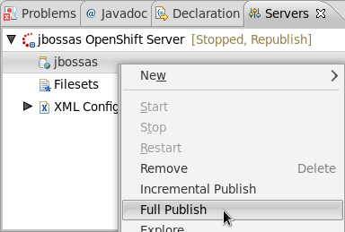

Server
Support for JDK7
JBoss AS Tools now supports JDK7 in WTP facets.
Support for Web Fragments
We added support for web fragments in M4. Web fragment project are now deployed as exploded jars to JBoss AS6 and AS7.
OpenShift Express Adapter
JBoss AS Tools now introduces a server adapter that is able to publish OpenShift Express applications to the Red Hat PaaS. The server adapter is created when you import an OpenShift Express application with our tools. Our adapter allows you to publish the changes within your eclipse project. It commits and pushes behind the scenes and offers you the most convenient pusblishing method so far.


Miscellaneous
Deploy OSGI projects to AS7
JBoss AS7 offers an impressive OSGI runtime. We therefore added the capability to deploy osgi projects to an AS7 instance in prior versions of JBoss tools. We still had minor bugs when deploying those projects. We fixed those bugs and now offer flawless behaviour.
Run on Server now waits
If you want to check your application running on the app server, you'd have to start it's deployment and pick Run As/Run on Server afterwards. In many cases your browser then showed a 404 "Not Found". The reason for this was that the browser did not wait until the deployment was successfully started. This has been fixed, and now the browser is only shown when the server has completed its duties.